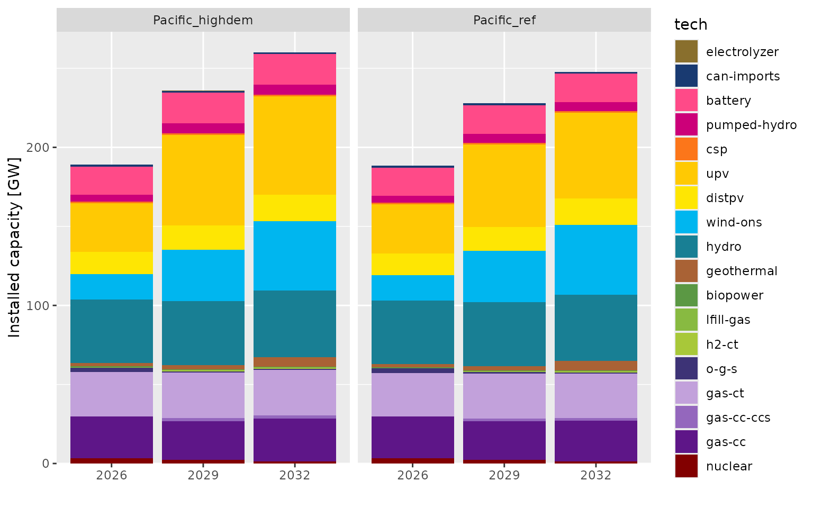
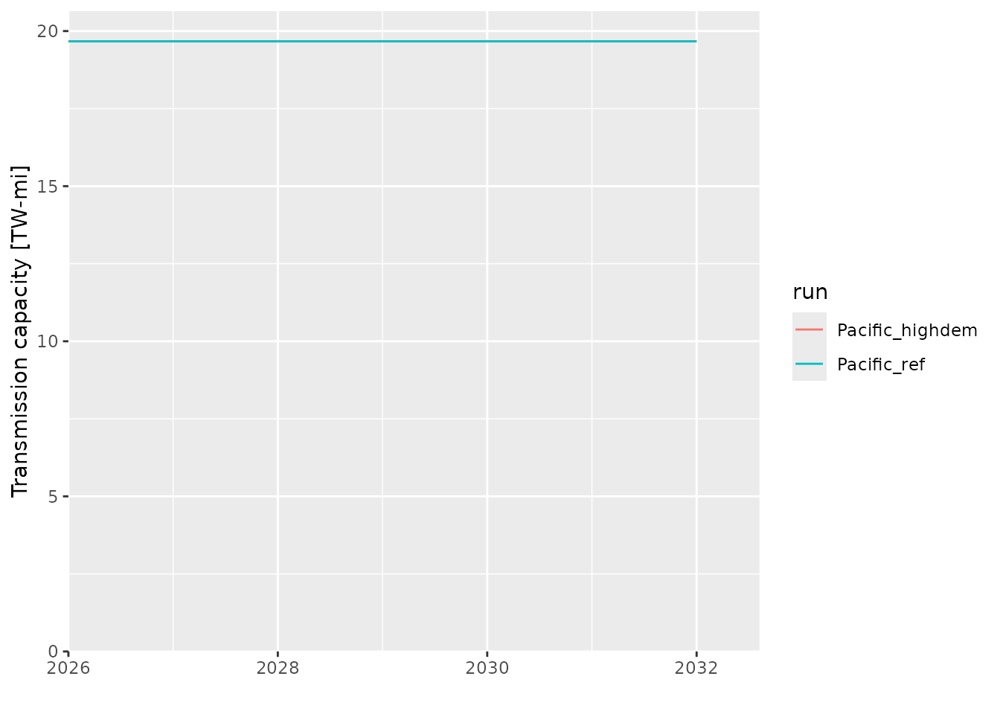
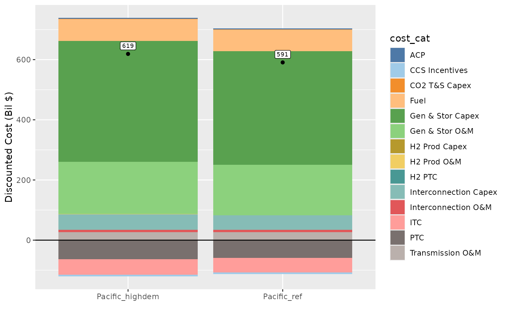

Getting Started with reedling
getting-started.RmdThis vignette walks through the core reedling workflow: loading ReEDS run data, formatting technology categories, and creating common plots.
Setup
library(reedling)
#> Warning: replacing previous import 'data.table::wday' by 'lubridate::wday' when
#> loading 'reedling'
#> Warning: replacing previous import 'data.table::second' by 'lubridate::second'
#> when loading 'reedling'
#> Warning: replacing previous import 'data.table::isoweek' by
#> 'lubridate::isoweek' when loading 'reedling'
#> Warning: replacing previous import 'data.table::yday' by 'lubridate::yday' when
#> loading 'reedling'
#> Warning: replacing previous import 'data.table::hour' by 'lubridate::hour' when
#> loading 'reedling'
#> Warning: replacing previous import 'data.table::year' by 'lubridate::year' when
#> loading 'reedling'
#> Warning: replacing previous import 'data.table::month' by 'lubridate::month'
#> when loading 'reedling'
#> Warning: replacing previous import 'data.table::week' by 'lubridate::week' when
#> loading 'reedling'
#> Warning: replacing previous import 'data.table::isoyear' by
#> 'lubridate::isoyear' when loading 'reedling'
#> Warning: replacing previous import 'data.table::minute' by 'lubridate::minute'
#> when loading 'reedling'
#> Warning: replacing previous import 'data.table::mday' by 'lubridate::mday' when
#> loading 'reedling'
#> Warning: replacing previous import 'data.table::quarter' by
#> 'lubridate::quarter' when loading 'reedling'
library(data.table)
library(ggplot2)
library(ggthemes)Loading runs
Use run_summary() to scan a directory of ReEDS runs.
Here we point to the example runs bundled with the package:
runspath <- system.file("extdata", "runs", package = "reedling")
runs <- run_summary(runspath, "20260810")
#> [1] "Loading meta file for 20260810_Pacific_highdem"
#> [1] "Loading meta file for 20260810_Pacific_ref"
runs
#> run batch last_step runtime_hours
#> <char> <char> <char> <num>
#> 1: Pacific_highdem 20260810 retail_rate_calculations.py_0 0.4
#> 2: Pacific_ref 20260810 retail_rate_calculations.py_0 0.4
#> outputs_h5
#> <lgcl>
#> 1: TRUE
#> 2: TRUE
#> path
#> <char>
#> 1: /home/runner/work/_temp/Library/reedling/extdata/runs/20260810_Pacific_highdem
#> 2: /home/runner/work/_temp/Library/reedling/extdata/runs/20260810_Pacific_refInstalled capacity
Load capacity data from outputs.h5 and apply standard
technology formatting:
cap <- load_h5_data(runs, "cap")
#> 0 runs are missing outputs.h5 file and will be skipped.
#> Loaded cap from outputs.h5 for Pacific_highdem
#> Loaded cap from outputs.h5 for Pacific_ref
#> Updated column name: Value --> cap_MW
#> All data loaded (0 secs.)
cap <- format_techs(cap)
#> formatting ReEDS techs
#> defaulting to 'tech_map' for mapping
#> Mapped the following technologies:
#>
#> [1] CoalOldScr --> coal
#> [2] Gas-CC --> gas-cc
#> [3] Gas-CC-CCS_mod --> gas-cc-ccs
#> [4] Gas-CC_Gas-CC-CCS_mod --> gas-cc-ccs
#> [5] Gas-CT --> gas-ct
#> [6] H2-CT --> h2-ct
#> [7] Nuclear --> nuclear
#> [8] battery_li --> battery
#> [9] biopower --> biopower
#> [10] can-imports --> can-imports
#> [11] csp-ns --> csp
#> [12] distpv --> distpv
#> [13] egs_nearfield_1 --> geothermal
#> [14] egs_nearfield_2 --> geothermal
#> [15] egs_nearfield_3 --> geothermal
#> [16] electrolyzer --> electrolyzer
#> [17] geohydro_allkm_1 --> geothermal
#> [18] geohydro_allkm_2 --> geothermal
#> [19] geohydro_allkm_3 --> geothermal
#> [20] geohydro_allkm_4 --> geothermal
#> [21] geohydro_allkm_5 --> geothermal
#> [22] geohydro_allkm_6 --> geothermal
#> [23] geohydro_allkm_7 --> geothermal
#> [24] geohydro_allkm_8 --> geothermal
#> [25] hydED --> hydro
#> [26] hydEND --> hydro
#> [27] hydND --> hydro
#> [28] hydNPND --> hydro
#> [29] hydUD --> hydro
#> [30] hydUND --> hydro
#> [31] lfill-gas --> lfill-gas
#> [32] o-g-s --> o-g-s
#> [33] pumped-hydro --> pumped-hydro
#> [34] upv_1 --> upv
#> [35] upv_2 --> upv
#> [36] upv_3 --> upv
#> [37] upv_4 --> upv
#> [38] upv_5 --> upv
#> [39] wind-ons_10 --> wind-ons
#> [40] wind-ons_2 --> wind-ons
#> [41] wind-ons_3 --> wind-ons
#> [42] wind-ons_4 --> wind-ons
#> [43] wind-ons_5 --> wind-ons
#> [44] wind-ons_6 --> wind-ons
#> [45] wind-ons_7 --> wind-ons
#> [46] wind-ons_8 --> wind-ons
#> [47] wind-ons_9 --> wind-ons
#>
#> Formatting tech levels
#> defaulting to 'tech_colors' for tech order
#> Techs levels setPlot installed capacity by technology and run:
cap_agg <- cap[, by = .(run, t, tech), .(cap_MW = sum(cap_MW))]
ggplot(cap_agg[t >= 2025], aes(x = factor(t), y = cap_MW / 1e3, fill = tech)) +
geom_col() +
facet_wrap(~run, nrow = 1) +
scale_x_discrete("") +
scale_y_continuous("Installed capacity [GW]",
expand = expansion(mult = c(0, 0.05))) +
scale_fill_manual(values = tech_colors) +
guides(fill = guide_legend(ncol = 1))
Annual generation
Load annual generation data with a different technology aggregation:
gen_ann <- load_h5_data(runs, "gen_ann")
#> 0 runs are missing outputs.h5 file and will be skipped.
#> Loaded gen_ann from outputs.h5 for Pacific_highdem
#> Loaded gen_ann from outputs.h5 for Pacific_ref
#> Updated column name: Value --> gen_ann_MWh
#> All data loaded (0 secs.)
gen_ann <- format_techs(gen_ann, col_to = "agg3")
#> formatting ReEDS techs
#> defaulting to 'tech_map' for mapping
#> Mapped the following technologies:
#>
#> [1] CoalOldScr --> coal
#> [2] Gas-CC --> natural gas
#> [3] Gas-CC-CCS_mod --> natural gas
#> [4] Gas-CC_Gas-CC-CCS_mod --> natural gas
#> [5] Gas-CT --> natural gas
#> [6] H2-CC --> other
#> [7] H2-CT --> other
#> [8] Nuclear --> nuclear
#> [9] battery_li --> storage
#> [10] biopower --> biopower
#> [11] can-imports --> other
#> [12] csp-ns --> solar
#> [13] distpv --> solar
#> [14] egs_nearfield_1 --> geothermal
#> [15] egs_nearfield_2 --> geothermal
#> [16] egs_nearfield_3 --> geothermal
#> [17] geohydro_allkm_1 --> geothermal
#> [18] geohydro_allkm_2 --> geothermal
#> [19] geohydro_allkm_3 --> geothermal
#> [20] geohydro_allkm_4 --> geothermal
#> [21] geohydro_allkm_5 --> geothermal
#> [22] geohydro_allkm_6 --> geothermal
#> [23] geohydro_allkm_7 --> geothermal
#> [24] geohydro_allkm_8 --> geothermal
#> [25] hydED --> hydro
#> [26] hydEND --> hydro
#> [27] hydND --> hydro
#> [28] hydNPND --> hydro
#> [29] hydUD --> hydro
#> [30] hydUND --> hydro
#> [31] lfill-gas --> other
#> [32] o-g-s --> other
#> [33] pumped-hydro --> storage
#> [34] upv_1 --> solar
#> [35] upv_2 --> solar
#> [36] upv_3 --> solar
#> [37] upv_4 --> solar
#> [38] upv_5 --> solar
#> [39] wind-ofs_1 --> wind
#> [40] wind-ofs_10 --> wind
#> [41] wind-ofs_3 --> wind
#> [42] wind-ofs_6 --> wind
#> [43] wind-ofs_7 --> wind
#> [44] wind-ofs_8 --> wind
#> [45] wind-ofs_9 --> wind
#> [46] wind-ons_10 --> wind
#> [47] wind-ons_2 --> wind
#> [48] wind-ons_3 --> wind
#> [49] wind-ons_4 --> wind
#> [50] wind-ons_5 --> wind
#> [51] wind-ons_6 --> wind
#> [52] wind-ons_7 --> wind
#> [53] wind-ons_8 --> wind
#> [54] wind-ons_9 --> wind
#>
#> Formatting tech levels
#> defaulting to 'tech_colors' for tech order
#> Techs levels setTransmission capacity
Load transmission data and plot total capacity over time:
tran_mi_out <- load_h5_data(runs, "tran_mi_out")
#> 0 runs are missing outputs.h5 file and will be skipped.
#> Loaded tran_mi_out from outputs.h5 for Pacific_highdem
#> Loaded tran_mi_out from outputs.h5 for Pacific_ref
#> Updated column name: Value --> tran_mi_out_MW-mi
#> All data loaded (0 secs.)
tran_mi_out$trtype <- factor(tran_mi_out$trtype, levels = c("LCC", "B2B", "AC"))
tran_mi_out_total <- tran_mi_out[, by = .(run, t),
.(`tran_mi_out_MW-mi` = sum(`tran_mi_out_MW-mi`))]
ggplot(tran_mi_out_total[t >= 2025],
aes(x = t, y = `tran_mi_out_MW-mi` / 1e6, color = run)) +
geom_line() +
scale_y_continuous("Transmission capacity [TW-mi]",
expand = expansion(mult = c(0, 0.05)), limits = c(0, NA)) +
scale_x_continuous("", expand = expansion(mult = c(0, 0.1)))
Bokeh report data
You can also load data from bokeh report Excel files. First, preview available fields:
list_bokeh_fields(runs)
#> [1] "Checking for fields in /home/runner/work/_temp/Library/reedling/extdata/runs/20260810_Pacific_highdem"
#> [1] "meta" "1_Error Check"
#> [3] "3_Generation (TWh)" "4_Capacity (GW)"
#> [5] "5_Energy Capacity (GWh)" "6_New Annual Capacity (GW)"
#> [7] "7_Annual Retirements (GW)" "8_Final Gen by timeslice (GW)"
#> [9] "9_Final Gen by stress timeslice" "10_Regional Gen Final (TWh)"
#> [11] "11_Operating Reserves (TW-h)" "14_Curtailment Rate"
#> [13] "15_Losses (fraction of load)" "16_Transmission (GW-mi)"
#> [15] "17_Transmission (PRM) (GW-mi)" "18_Bulk System Electricity Pric"
#> [17] "19_National Energy Price ($-MWh" "20_Final National Energy Price "
#> [19] "21_National Average Electricity" "22_National OpRes Price ($-MW-h"
#> [21] "23_Final National OpRes Price b" "25_National Annual Capacity Pri"
#> [23] "26_Annual Revenue National (Bil" "27_Annual Revenue per Capacity "
#> [25] "28_Annual Revenue per Generatio" "29_Present Value of System Cost"
#> [27] "30_Emissions National (metric t" "31_Net CO2e Emissions National "
#> [29] "32_CO2 Abatement Cost ($-metric" "33_Undiscounted Annualized Syst"
#> [31] "34_Hydrogen Production (Million" "35_Hydrogen Price ($ per kg)"
#> [33] "45_Capacity Factor - Generation" "46_Battery Average Duration (h)"
#> [35] "47_Retail rate (¢-kWh)" "48_New Tech Value Factors"
#> [37] "49_Monetized health damages ove" "50_Mortality over time (lives-y"
#> [39] "51_Total undiscounted health da" "52_Total discounted health dama"
#> [41] "53_Total mortality through 2050" "54_System cost + health damages"
#> [43] "55_System cost + health damages" "56_Runtime (hours)"
#> [45] "57_Runtime by year (hours)"Then load a specific result, such as system cost:
npv <- load_bokeh_data(runs, "29_Present Value of System Cost")
#> [1] "Loading 29_Present Value of System Cost from reeds-report/report.xlsx for Pacific_highdem"
#> [1] "Loading 29_Present Value of System Cost from reeds-report/report.xlsx for Pacific_ref"
#> [1] "Elapsed time: 0 seconds"
npv_net <- npv[, by = .(run), .(net = sum(`Discounted Cost (Bil $)`))]
ggplot(npv, aes(x = run)) +
geom_col(mapping = aes(y = `Discounted Cost (Bil $)`, fill = cost_cat)) +
geom_point(data = npv_net, mapping = aes(y = net)) +
geom_label(data = npv_net, mapping = aes(y = net, label = round(net)),
vjust = -0.5, size = 2.5) +
geom_hline(yintercept = 0) +
scale_x_discrete("") +
scale_fill_tableau(palette = "Tableau 20")
Loading CSV outputs
In addition to outputs.h5, you can load individual CSV
files with load_run_data():
cap_csv <- load_run_data(runs, "cap.csv")
#> Loaded cap.csv for Pacific_highdem
#> Loaded cap.csv for Pacific_ref
#> Updated column name: Value --> cap_MW
#> All files loaded (0 secs.)
hierarchy <- load_run_data(runs, "hierarchy.csv", folder = "inputs_case")
#> Loaded hierarchy.csv for Pacific_highdem
#> Loaded hierarchy.csv for Pacific_ref
#> All files loaded (0 secs.)